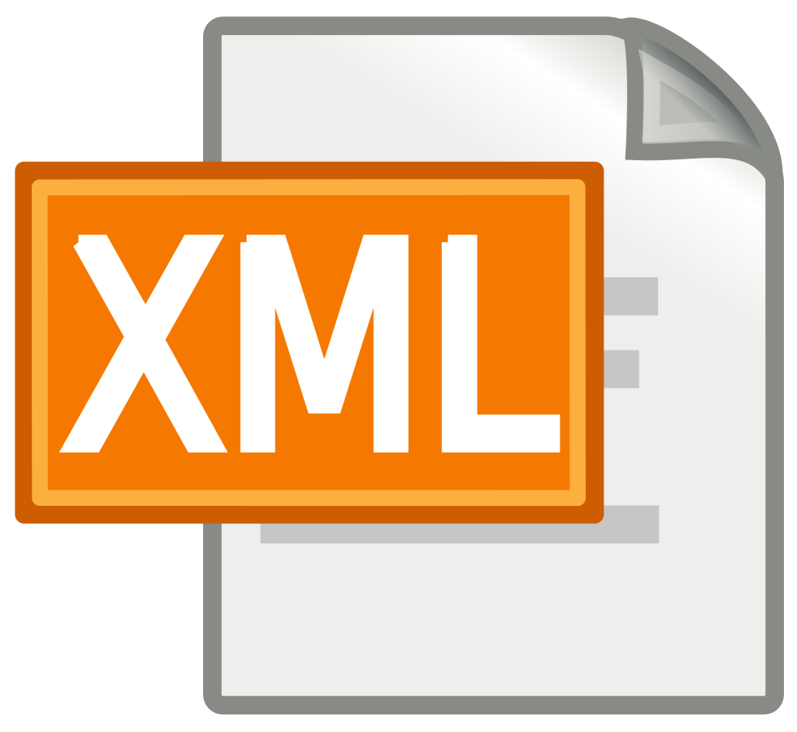
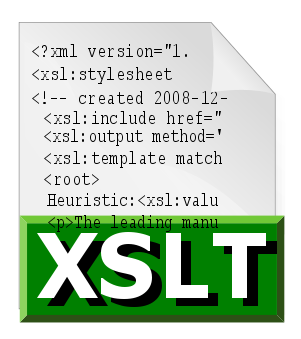

Mis Proyectos

RA1 Diseño de un fichero XML
Se Inventa un contexto en el que tenga sentido usar un fichero XML

Portfolio
Consiste en construir una página web utilizado lo aprendido de html y css.
Sindicacion de Atom y RSS
En esta tarea se trata de incluir la posibilidad de sindicación por Atom y RSS a tu portfolio.

Generar código HTML a partir de un archivo XML
En esta práctica debes crear un archivo XSLT que transforme parte del archivo XML
Diseño de consultas sobre la base de datos del proyecto
Se trata de implementar algunas consultas sobre la base de datos que has desarrollado para el proyecto SGBD. Pero con Xquery